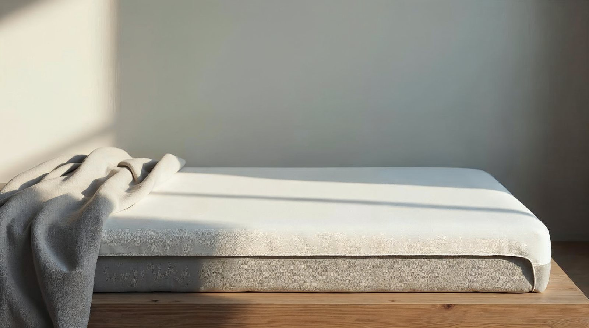
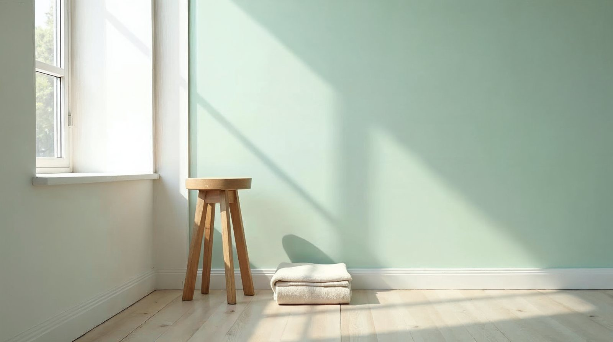
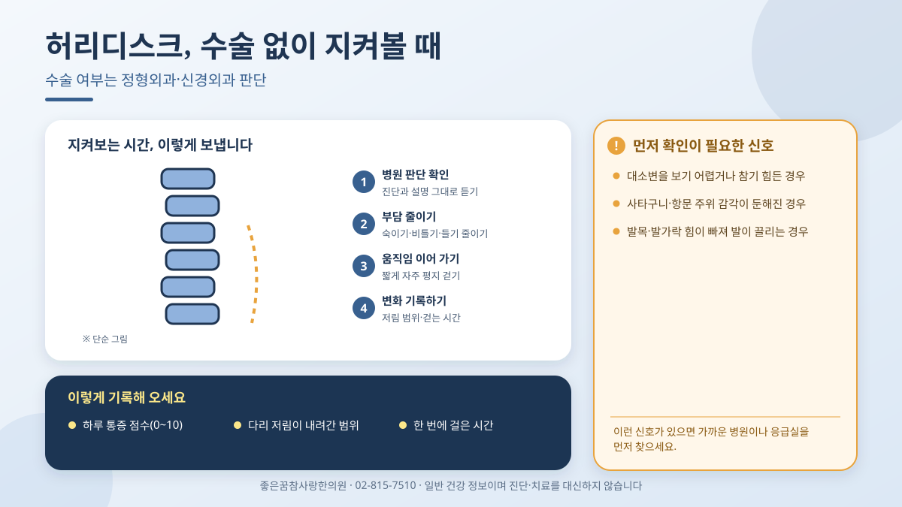

이종호 한의사 감수좋은꿈참사랑한의원 대표원장 (한의사 면허번호 19769)발행 2026-11-26 · 수정 2026-11-27
이 글의 차례
MRI 결과지를 손에 쥐고 진료실에 들어오시는 분들의 얼굴에는 대개 걱정이 가득해요. "디스크가 튀어나왔대요. 수술해야 하는 건가요, 아니면 이대로 지내도 되는 건가요?" 결과지 위의 낯선 단어들이 마음을 더 무겁게 만들죠. 그 마음 충분히 이해해요.
먼저 분명히 말씀드리고 싶은 게 있어요. 수술이 필요한지 아닌지는 영상과 신경 검사를 직접 보는 정형외과나 신경외과 선생님이 판단할 일이에요. 한의원에서 그 판단을 대신하지는 않아요. 필요하다면 해야 하는 거고요. 제가 함께할 수 있는 건 그 판단을 받은 뒤의 시간이에요.
실제로 허리디스크 진단을 받은 분들 가운데 상당수는 당장 수술보다 먼저 지켜보며 관리해 보자는 이야기를 들으세요. 그런데 그 '지켜보는 시간'이 막막하거든요. 무엇을 해야 하는지, 무엇을 피해야 하는지, 언제 다시 병원에 가야 하는지 알려 주는 사람이 없으니까요.
그러니까 사실은 두 가지를 나눠서 보셔야 해요. '결과지에 디스크가 보이는 것'과 '지금 몸이 어떤가'는 다른 얘기예요. 사진은 그날 하루를 찍은 거고, 몸은 매일 조금씩 달라지거든요. 그래서 저는 결과지와 함께 오늘의 몸을 같이 봐요.
오늘은 그 시간을 어떻게 보내면 좋을지, 한의원에서는 무엇을 살피고 어떤 진료를 함께 고를 수 있는지, 그리고 어떤 변화가 생기면 다시 병원 판단을 받아야 하는지 정리해 볼게요.
허리디스크는 어떤 상태인가요
허리뼈 사이에는 충격을 받아 주는 말랑한 쿠션이 있습니다. 바깥은 질긴 섬유 테두리, 안쪽은 젤리 같은 속으로 이루어져 있습니다. 이 테두리가 약해지면서 속이 뒤쪽으로 밀려 나오면 바로 뒤를 지나는 신경을 누르거나 자극할 수 있는데, 이것을 흔히 허리디스크라고 부릅니다.
밀려 나온 정도에 따라 팽윤, 돌출, 탈출 같은 말로 나누어 설명을 듣게 됩니다. 단어가 무섭게 들리지만, 영상에서 보이는 크기와 실제로 느끼는 통증이 꼭 비례하지는 않습니다. 크게 튀어나왔는데 견딜 만한 분도 있고, 작게 보이는데 다리 저림이 심한 분도 있습니다.
그래서 영상 한 장보다 지금 어떤 증상이 있는지, 다리 힘과 감각이 어떤지가 앞으로의 방향을 정하는 데 더 중요하게 쓰입니다. 이 판단의 중심에는 영상을 직접 보는 병원 선생님이 계십니다.
왜 수술 없이 지켜보자는 이야기를 듣게 될까요
허리디스크로 생긴 통증과 저림은 시간이 지나며 가라앉는 흐름을 보이는 경우가 적지 않습니다. 밀려 나온 디스크 주변의 염증과 붓기가 줄어들고, 몸이 조금씩 적응해 가기 때문입니다.
그래서 다리 힘이 빠지지 않고, 대소변 문제가 없으며, 통증을 견디며 일상이 가능한 경우에는 약과 생활 관리, 비수술 치료를 먼저 해 보며 지켜보자는 이야기를 듣게 되는 경우가 많습니다. 이 판단 역시 증상과 영상을 함께 본 병원 선생님의 몫입니다.
반대로 다리 힘이 눈에 띄게 약해지거나, 대소변에 변화가 생기거나, 몇 주가 지나도 통증이 일상을 무너뜨릴 만큼 이어진다면 수술을 포함한 다른 방법을 다시 상의하게 됩니다. 지켜본다는 것은 아무것도 하지 않는다는 뜻이 아니라, 변화를 주의 깊게 살핀다는 뜻입니다.
지켜보는 동안 무엇이 중요할까요
지켜보는 시간에 가장 중요한 것은 디스크에 반복해서 부담을 주는 자세를 줄이면서도, 몸을 너무 움츠리지 않는 균형입니다. 겁이 나서 꼼짝하지 않으면 허리를 받쳐 주는 근육이 약해지고 굳어서 오히려 회복이 더뎌질 수 있습니다.
허리를 숙이고 오래 앉아 있는 자세, 허리를 숙인 채 무거운 것을 드는 동작, 허리를 비틀며 물건을 옮기는 동작은 디스크 안쪽의 압력을 높입니다. 반대로 짧게 자주 걷기, 등을 기대고 바르게 앉기, 옆으로 누워 무릎을 살짝 굽히기는 부담을 덜어 주는 자세입니다.
또 하나 중요한 것은 기록입니다. 다리 저림의 범위가 줄어드는지 넓어지는지, 걸을 수 있는 시간이 늘어나는지 줄어드는지를 적어 두면, 다음 병원 진료에서 판단할 때 큰 도움이 됩니다.

시기에 따라 달라지는 관리
통증이 막 시작된 처음 며칠은 허리를 숙이거나 돌아눕는 것조차 힘든 경우가 많습니다. 이 시기에는 무리해서 움직이기보다 편한 자세를 찾아 쉬면서, 화장실 가기나 집 안 걷기처럼 꼭 필요한 움직임을 천천히 이어 가는 것이 좋습니다.
몇 주가 지나 날카로운 통증이 조금 가라앉으면, 걷는 시간을 조금씩 늘리고 앉아 있는 습관을 다듬는 단계로 넘어갑니다. 이때 허리와 엉덩이 주변 근육이 굳어 있는 경우가 많아서, 근육의 긴장을 풀고 움직임을 되찾는 데 진료의 초점을 둡니다.
통증이 꽤 줄어든 뒤에는 다시 도지지 않도록 생활을 정리하는 시기입니다. 오래 앉는 일, 무거운 것을 드는 일, 아이를 안는 일처럼 각자의 생활에서 허리에 부담이 실리는 순간을 찾아 하나씩 바꿔 갑니다. 이 시기를 잘 보내는 것이 다음 재발을 줄이는 데 중요합니다.
시기마다 조금씩 다르지만, 어느 단계에서든 다리 힘과 감각의 변화는 함께 지켜봅니다. 통증은 줄었는데 발목 힘이 약해지는 흐름이 보인다면, 통증이 덜하더라도 병원 확인을 먼저 권합니다.
허리디스크와 헷갈리기 쉬운 통증
허리가 아프고 다리가 당긴다고 모두 디스크 때문은 아닙니다. 영상에서 디스크가 보여도 지금의 통증이 다른 곳에서 오는 경우도 있습니다. 나이가 들면 증상이 없는 분에게도 영상에서 디스크 변화가 흔히 보이기 때문입니다.
허리를 뒤로 젖히거나 돌릴 때 허리 한쪽이 찌르듯 아프다면 허리 뒤쪽 작은 관절의 문제일 수 있고, 엉치 한쪽이 콕 찌르듯 아프다면 천장관절 쪽을 함께 봅니다. 엉덩이 깊은 근육이 신경을 조이는 경우도 다리 저림을 만듭니다.
그래서 진료실에서는 영상 결과를 존중하면서도, 손으로 눌러 보고 움직여 보며 지금 통증이 재현되는 자리를 다시 확인합니다. 디스크 하나만 보지 않고 허리 전체를 함께 살피는 이유입니다.
디스크 진단을 받은 분들이 자주 헷갈리는 것
첫째, 디스크는 한번 튀어나오면 다시는 좋아지지 않는다는 생각입니다. 영상의 모양과 상관없이 통증과 저림은 시간이 지나며 가라앉는 경우가 많습니다. 결과지의 단어보다 지금 몸의 흐름을 보시는 것이 마음에도 도움이 됩니다.
둘째, 허리를 아예 쓰지 말아야 한다는 생각입니다. 허리를 보호하는 것과 허리를 쓰지 않는 것은 다릅니다. 무리한 동작을 피하면서 걷기처럼 부드러운 움직임은 이어 가는 것이 허리를 받치는 힘을 지키는 길입니다.
셋째, 통증이 줄었으니 다 나은 것이라는 생각입니다. 통증이 가라앉은 뒤에 예전처럼 오래 앉고 무리하게 들면 다시 도지기 쉽습니다. 통증이 줄어든 시기야말로 자세와 생활 습관을 다듬기 좋은 때입니다.
먼저 이렇게 여쭙니다
처음 오시면 저는 대략 이런 순서로 여쭙니다. 병원에서 들은 설명을 떠올려 오시면 이야기가 훨씬 수월해집니다.
- 언제, 어느 병원에서, 어떤 진단을 받으셨나요?
- 수술을 권유받으셨나요, 지켜보자는 이야기를 들으셨나요?
- 허리 통증과 다리 저림 가운데 어느 쪽이 더 힘드신가요?
- 저림은 다리 어디까지 내려가나요? 다리 힘이 빠지는 느낌은 있나요?
- 앉기, 서기, 걷기, 눕기 가운데 언제 가장 불편한가요?
- 드시는 약이나 받고 계신 다른 치료가 있나요?
허리 진료 때는 대소변 변화가 없는지도 함께 여쭙습니다. 허리 아래 신경과 관련된 중요한 확인이라 모든 분께 여쭙고 있으니 편하게 말씀해 주세요.

일상에서 먼저 해 볼 수 있는 것
디스크 진단 뒤의 생활은 '부담은 줄이고, 움직임은 이어 가기'로 정리할 수 있습니다. 한꺼번에 다 바꾸려 하기보다 하나씩 몸에 익혀 보세요.
- 30~40분 앉았다면 일어나 잠깐 걷거나 허리를 가볍게 펴기
- 의자에 앉을 때 엉덩이를 깊숙이 넣고 등받이에 기대기
- 바닥에 앉는 생활보다 의자와 식탁 쓰기
- 물건을 들 때 무릎을 굽히고 몸 가까이 붙여 들기
- 세수나 설거지할 때 한쪽 발을 낮은 받침에 올려 허리 숙임 줄이기
- 아침에 일어날 때 옆으로 돌아누운 뒤 팔로 밀며 일어나기
걷기는 통증이 심하지 않은 범위에서 짧게 자주 하시는 것이 좋습니다. 처음에는 10분 정도로 시작해서, 다음 날 통증이 늘지 않으면 조금씩 늘려 갑니다. 걷다가 다리 저림이 심해지면 그날은 거기서 멈춥니다.
기침이나 재채기를 할 때 허리와 다리로 찌릿함이 오는 분이 많습니다. 기침이 나올 것 같으면 무릎을 살짝 굽히거나 벽이나 탁자를 짚어 허리에 실리는 충격을 덜어 보세요. 감기에 걸린 시기에는 허리 통증이 함께 심해지기 쉬우니 더 주의합니다.
잠자리도 살펴봅니다. 너무 푹 꺼지는 매트리스는 허리가 처지게 만들고, 너무 딱딱한 바닥은 엉덩이와 허리를 배기게 합니다. 바로 누울 때는 무릎 아래에, 옆으로 누울 때는 무릎 사이에 베개를 두면 허리가 한결 편해집니다.
일과 집안일은 어떻게 이어 갈까요
허리디스크 진단을 받으면 일을 쉬어야 하는지 묻는 분이 많습니다. 일의 종류와 통증 정도에 따라 다르지만, 앉아서 하는 일이라면 의자와 모니터 높이를 맞추고 자주 일어나는 것만으로도 이어 갈 수 있는 경우가 많습니다.
무거운 것을 드는 일이나 허리를 오래 숙이는 일이라면 통증이 심한 시기만큼은 동료와 나누거나 방법을 바꿔 보시길 권합니다. 집에서는 장바구니를 양손에 나눠 들고, 빨래는 바닥이 아닌 허리 높이에서 개는 것처럼 작은 조정이 허리 부담을 꽤 덜어 줍니다.
운전을 오래 하시는 분은 좌석을 너무 뒤로 젖히지 말고, 허리 뒤에 작은 쿠션을 받쳐 보세요. 한 시간에 한 번은 차에서 내려 허리를 펴고 몇 걸음 걷는 것만으로도 다리 당김이 덜한 경우가 많습니다. 내릴 때는 몸을 비틀지 말고 두 다리를 함께 돌려 내리세요.
한의원에서 함께 살필 수 있는 경우
- 병원에서 지켜보며 관리하자는 이야기를 들은 경우
- 약을 먹으며 지내는데 허리와 엉덩이 근육이 계속 굳는 경우
- 다리 당김이 남아 오래 앉거나 걷기가 불편한 경우
- 통증 때문에 잠을 설치고 몸이 지치는 경우
- 통증이 줄어든 뒤 다시 도지지 않도록 자세를 다듬고 싶은 경우
좋은꿈참사랑한의원에서는 먼저 아래의 '먼저 확인이 필요한' 신호가 없는지부터 봅니다. 그다음 맥을 짚고, 허리와 골반의 움직임, 누르는 자리의 반응, 다리의 감각과 힘을 확인합니다.
진찰한 내용에 따라 침 치료, 척추와 골반의 움직임을 보고 세기를 고르는 추나, 필요한 경우 초음파로 위치를 확인하며 놓는 약침 가운데 지금 상태에 맞는 것을 정합니다. 강한 교정이 부담스러운 시기라면 부드러운 기법부터 시작합니다. 한약을 상의할 때는 드시는 약을 확인한 뒤 신중하게 정합니다.
병원에서 처방받은 약은 상의 없이 멈추지 마세요. 한의원 진료는 병원의 판단과 정기 확인을 대신하는 것이 아니라 그 사이의 시간을 함께하는 것입니다. 수술 여부에 관한 결정은 언제나 정형외과·신경외과 선생님과 상의해 주세요.
이렇게 기록해 오시면 상담이 쉬워집니다
지켜보는 시간에는 기록이 곧 판단의 근거가 됩니다. 2주 정도만 간단히 적어 보세요.
- 하루 중 가장 아팠던 때의 통증 점수(0~10)
- 다리 저림이 내려간 범위(엉덩이, 허벅지, 종아리, 발)
- 한 번에 걸을 수 있었던 시간
- 앉아 있던 시간과 불편해진 시점
- 진통제를 드신 날과 효과
- 밤에 통증으로 깬 횟수
이 기록은 한의원에서만 쓰는 것이 아닙니다. 다음 병원 진료 때 함께 보여 드리면, 지켜보는 방향을 이어 갈지 다른 방법을 상의할지 판단하는 데 큰 도움이 됩니다.
결과지보다 오늘의 몸을
결과지의 단어는 바뀌지 않아도, 몸은 매일 조금씩 달라져요. 지난주보다 조금 더 오래 걸었는지, 아침에 조금 덜 뻣뻣했는지, 그런 작은 변화가 회복의 흐름을 보여 주거든요. 지켜보며 관리하자는 말을 들으셨다면, 그 시간을 같이 잘 보내면 되는 거예요.
허리와 엉덩이의 긴장을 살피고 치료를 정하는 건 제가 맡을게요. 대신 하나만 부탁드려요. 이번 주에는 앉는 법 하나만 바꿔 보세요. 엉덩이를 의자 깊숙이 넣고 등을 기대고 앉되, 40분쯤 지나면 한 번 일어나는 것. 이걸 '앉는 법' 하나로 묶어서 기억해 주시면 돼요.
딴 건 지금처럼 하셔도 돼요. 다음에 오시면 기록을 함께 펼쳐 보며 그다음 걸음을 정할게요. 궁금한 건 그때 편하게 물어보세요.
이런 증상은 먼저 확인이 필요합니다
- 대소변을 보기 어렵거나 참기 힘들고, 사타구니와 항문 주위 감각이 둔해진 경우
- 발목이나 발가락에 힘이 빠져 발이 끌리고 그 정도가 빠르게 심해지는 경우
이런 신호가 있으면 한의원보다 가까운 병원이나 응급실을 먼저 찾으세요.
함께 읽으면 좋은 글
- 허리 디스크 초기 신호와 다리 저림은 어떻게 구분하나요?
- 디스크가 닳았다는 말을 들었을 때, 퇴행성 디스크는 무엇이고 어떻게 살피나요?
- 교정추나는 어떤 진료이고, 어떤 경우에 받나요?
- 약침은 무엇이고 시술 전에 무엇을 알려야 하나요?
- 병원에서 찍은 MRI나 X-ray 자료를 한의원에 가져가면 어떻게 쓰이나요?

여쭙는 것
- 언제, 어느 병원에서, 어떤 진단을 받으셨나요?
- 수술을 권유받으셨나요, 지켜보자는 이야기를 들으셨나요?
- 허리 통증과 다리 저림 가운데 어느 쪽이 더 힘드신가요?
생활에서 해 볼 것
- 30~40분 앉았다면 일어나 잠깐 걷거나 허리를 가볍게 펴기
- 의자에 앉을 때 엉덩이를 깊숙이 넣고 등받이에 기대기
- 바닥에 앉는 생활보다 의자와 식탁 쓰기
한의원에서 함께 살필 것
- 병원에서 지켜보며 관리하자는 이야기를 들은 경우
- 약을 먹으며 지내는데 허리와 엉덩이 근육이 계속 굳는 경우
- 다리 당김이 남아 오래 앉거나 걷기가 불편한 경우
먼저 확인이 필요한 신호
- 대소변을 보기 어렵거나 참기 힘들고, 사타구니와 항문 주위 감각이 둔해진 경우
- 발목이나 발가락에 힘이 빠져 발이 끌리고 그 정도가 빠르게 심해지는 경우
한눈에 보는 표
| 구분 | 핵심 |
|---|---|
| 여쭙는 것 | 언제, 어느 병원에서, 어떤 진단을 받으셨나요? 수술을 권유받으셨나요, 지켜보자는 이야기를 들으셨나요? |
| 생활에서 해 볼 것 | 30~40분 앉았다면 일어나 잠깐 걷거나 허리를 가볍게 펴기 의자에 앉을 때 엉덩이를 깊숙이 넣고 등받이에 기대기 |
| 한의원에서 함께 살필 것 | 병원에서 지켜보며 관리하자는 이야기를 들은 경우 약을 먹으며 지내는데 허리와 엉덩이 근육이 계속 굳는 경우 |
| 먼저 확인이 필요한 신호 | 대소변을 보기 어렵거나 참기 힘들고, 사타구니와 항문 주위 감각이 둔해진 경우 발목이나 발가락에 힘이 빠져 발이 끌리고 그 정도가 빠르게 심해지는 경우 |
자주 묻는 질문
한의원에서 수술이 필요한지 판단해 주시나요?
수술 여부는 영상과 신경 검사를 직접 보는 정형외과나 신경외과에서 판단합니다. 한의원에서는 그 판단을 받은 뒤 지켜보는 시간의 통증과 생활을 함께 살피고, 다시 병원 확인이 필요해 보이면 그 방향을 안내합니다.
디스크가 있는데 추나를 받아도 되나요?
진찰로 지금 상태를 먼저 확인한 뒤 기법과 세기를 정합니다. 통증이 심한 시기에는 강한 교정보다 부드러운 기법부터 시작하고, 받는 동안 불편하면 바로 말씀해 주시면 됩니다.
병원 약과 한의원 진료를 같이 받아도 되나요?
드시는 약을 알려 주시면 그에 맞춰 진료 방향을 정합니다. 처방받은 약은 상의 없이 멈추지 마시고, 한약을 상의할 때는 드시는 약을 확인한 뒤 신중하게 정합니다.
디스크가 있으면 운동은 하지 말아야 하나요?
통증이 심하지 않은 범위에서 짧게 자주 걷는 것은 대개 도움이 됩니다. 허리를 숙이고 비트는 운동이나 무거운 것을 드는 운동은 통증이 가라앉을 때까지 미루고, 진찰 뒤 맞는 동작을 함께 정하시길 권합니다.
언제 다시 병원에 가 봐야 하나요?
다리 힘이 약해지거나 저림 범위가 넓어질 때, 몇 주가 지나도 통증이 줄어드는 흐름이 없을 때는 처방한 병원에서 다시 상의해 보세요. 기록해 둔 내용을 함께 보여 드리면 판단에 도움이 됩니다.
좋은꿈참사랑한의원은 재진 때 지난번 이야기부터 이어서 여쭙니다. 진료시간과 예약은 오시는 길에서 확인하세요.
어디서 상담받을 수 있나요?
좋은꿈참사랑한의원은 서울 동작구 만양로2길 2 신성빌딩 3층·5층(서울 동작구 상도동, 7호선 상도역 3번 출구 근처)에 있습니다. 한의사 3명(이종호 대표원장, 조영기 수석진료원장, 정원영 진료원장)이 진료합니다. 진료시간은 평일 09:30~20:00(점심 13:00~14:00), 토·일·공휴일 09:30~15:00이며, 방문 전 전화로 확인을 권합니다. 예약은 네이버 예약, 카카오톡 상담, 전화 02-815-7510로 받습니다.
이 글은 일반적인 건강 정보이며 개인의 진단이나 치료를 대신하지 않습니다. 증상이 있거나 복용 중인 약이 있다면 진료를 통해 확인하세요. 치료 효과는 개인마다 다를 수 있습니다.
작성 기준: 일반적으로 알려져 있는 건강 정보를 참고해 정리했습니다(대표원장 감수). 증상 기록은 1~2주 동안 하루 1회, 비슷한 시간에 적어 오시면 지난 상태와 비교하기 쉽습니다.